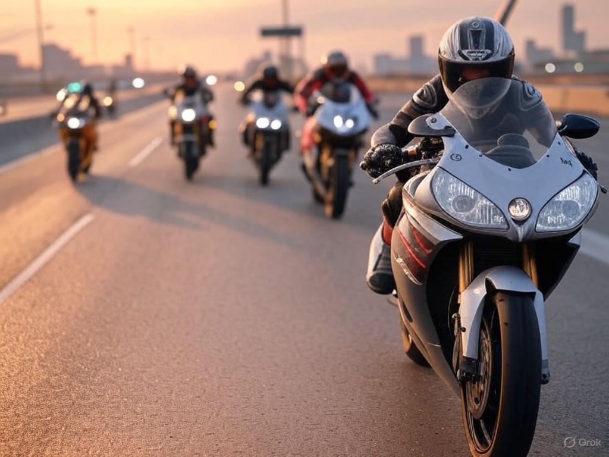

Are you ready to hit the open road, feel the adrenaline rush, and experience the thrill of high-speed motorcycle racing? Look no further than Traffic Rider APK, one of the most exciting and immersive racing games available today. Whether you're a casual gamer or a hardcore racing enthusiast, this game offers endless entertainment. And the best part? You can now download the latest version of Traffic Rider with unlimited money, unlocking all bikes, upgrades, and customization options for an unbeatable gaming experience.
Traffic Rider is not just another racing game—it's a masterpiece that combines stunning graphics, realistic physics, and heart-pounding gameplay. Unlike traditional racing games where you compete against AI opponents on closed tracks, Traffic Rider puts you in real-world traffic scenarios. You'll weave through cars, trucks, and buses at breakneck speeds, testing your reflexes and precision. The first-person perspective adds an extra layer of immersion, making you feel like you're actually riding a powerful motorcycle.
The game features a variety of bikes, from sleek sports models to heavy cruisers, each with unique handling and speed. The attention to detail is impressive, with realistic engine sounds, dynamic weather conditions, and day-night cycles that keep the gameplay fresh. Whether you're speeding down a highway at sunset or dodging traffic in the rain, Traffic Rider delivers a visually stunning and engaging experience.
Let's be honest—racing games are way more fun when you have all the best upgrades right from the start. With unlimited money in Traffic Rider, you can unlock every bike, upgrade them to their maximum potential, and customize them to your liking without grinding for hours. No more waiting to save up for that dream motorcycle or struggling with slow, underpowered bikes in the early stages.
Unlimited money means you can instantly purchase the fastest bikes in the game, upgrade speed, acceleration, and braking to dominate every race, customize your ride with different colors and designs, and unlock all missions and career modes without restrictions.
This feature transforms Traffic Rider from a great game into an unbeatable one. You can focus on mastering the roads, completing challenges, and setting new speed records without worrying about in-game currency.
Getting Traffic Rider with unlimited money is easier than you think. Simply follow these steps: First, find a trusted source—ensure you download the modded APK from a reliable website to avoid malware or fake files. Then, enable installation from unknown sources—since the modded version isn't available on the official app store, you'll need to allow installations from outside the Google Play Store. Finally, install and enjoy—once downloaded, install the APK, launch the game, and experience unlimited money right away.
The latest version of Traffic Rider comes with bug fixes, smoother gameplay, and additional features that enhance your racing adventure. Always make sure you have the most recent update to enjoy the best performance.
Traffic Rider isn't just about mindless speeding—it offers multiple game modes to keep you hooked for hours.
In Career Mode, you progress through different missions, each with unique challenges like time trials, overtaking a set number of vehicles, or avoiding accidents. The further you go, the tougher it gets, but with unlimited money, you'll always have the best bike for the job.
Endless Mode tests how long you can survive in heavy traffic without crashing. The speed keeps increasing, and one wrong move can end your run.
Sometimes, you just want to cruise without any pressure. Free Ride mode lets you explore the roads at your own pace, enjoying the scenery and the thrill of the ride.
Each mode offers a different kind of excitement, ensuring that Traffic Rider never gets boring.
One of the biggest strengths of Traffic Rider is its realistic physics engine. The bikes handle differently based on their weight, speed, and acceleration. Lean into turns too sharply, and you might wipe out. Brake too hard, and you'll skid. Mastering these mechanics is part of the fun, and the game rewards skill and precision.
The graphics are another highlight. The environments are beautifully rendered, with detailed roads, dynamic lighting, and realistic weather effects. Whether it's the glare of the sun or the reflection of headlights on wet asphalt, every visual detail enhances the immersion.
If you love racing games, Traffic Rider is a must-have. The combination of high-speed action, realistic gameplay, and the freedom of unlimited money makes it one of the best mobile racing experiences available. You'll never have to worry about grinding for coins or being stuck with slow bikes—just pure, unadulterated racing fun.
So what are you waiting for? Download Traffic Rider now, unlock unlimited money, and start your journey as the ultimate road warrior. Race without limits, conquer every challenge, and experience the thrill of high-speed motorcycle racing like never before!
Traffic Rider is more than just a game—it's an adrenaline-packed adventure that keeps you coming back for more. With unlimited money, you can skip the grind and dive straight into the action, enjoying every bike and upgrade the game has to offer. The realistic physics, multiple game modes, and stunning visuals make it a standout title in the racing genre.
Don't miss out on this incredible experience. Download Traffic Rider today and take your gaming to the next level! Happy riding, and remember—speed responsibly (in the game, of course)! 🚀🏍️